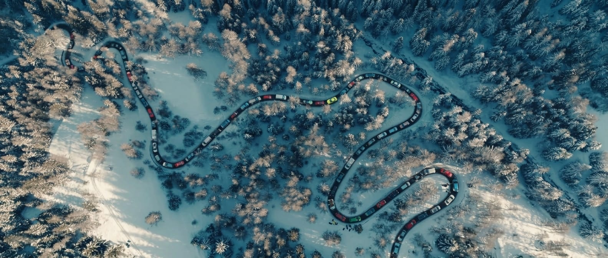
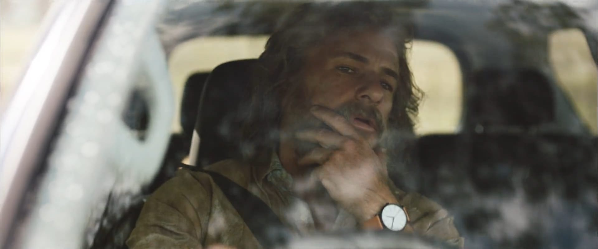
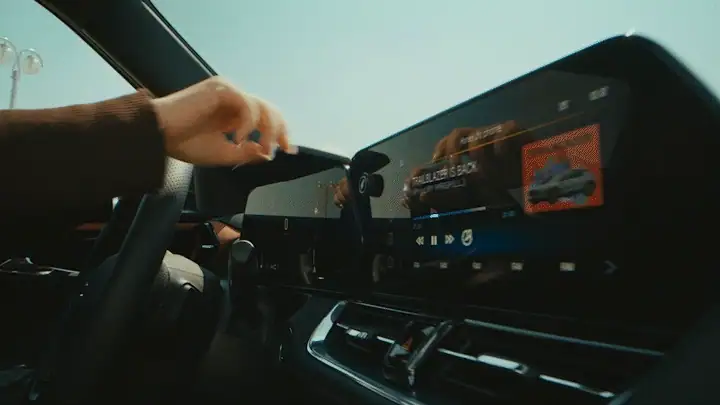
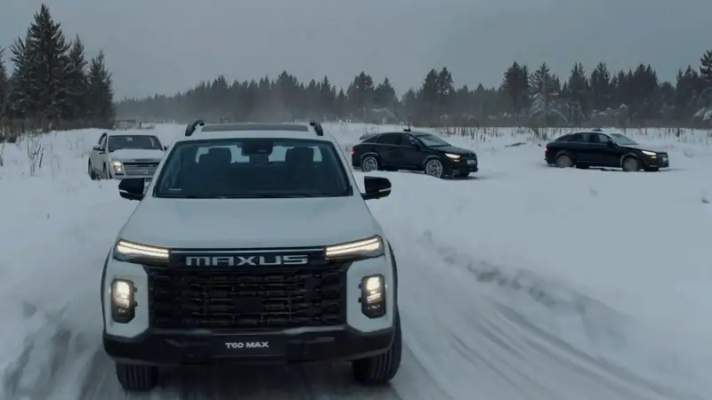
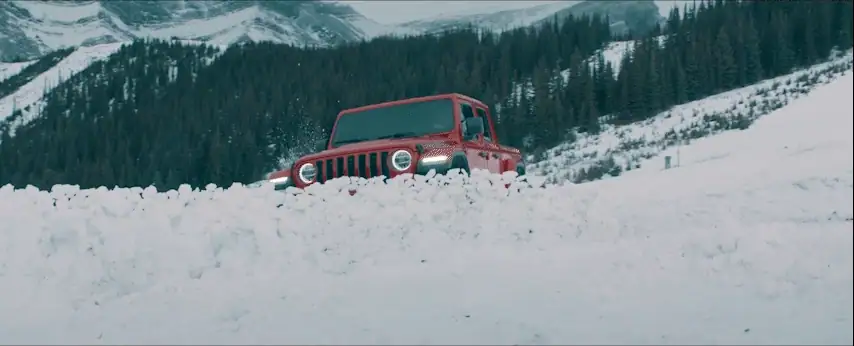
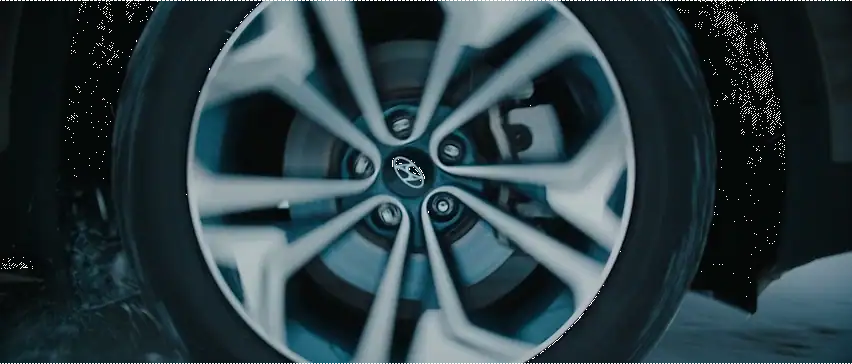
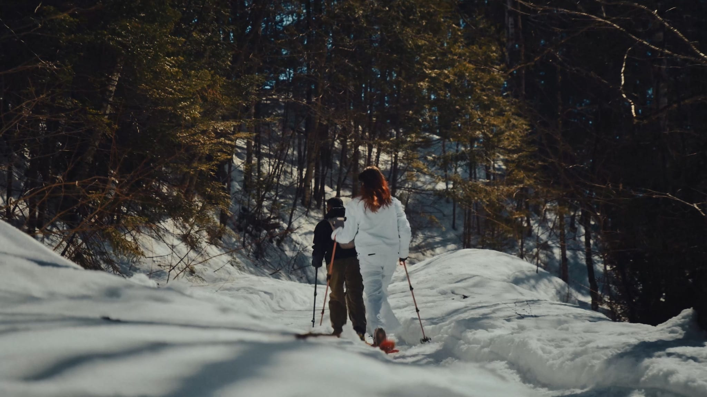
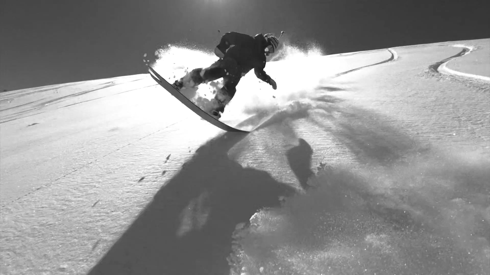

01
EscenaToma de drone: la Maxus T60 MAX atorada en el tráfico de la subida al cerro.
Radio
Demoras de hasta 2 horas para subir al cerro después de la gran nevada de anoche…

02
EscenaManu mira preocupado su reloj.
Fede
Tranqui, conozco otro camino.

03
EscenaFede apaga el GPS que se veía en la pantalla de la camioneta mientras la cámara se acerca bruscamente.

04
EscenaExt. La camioneta se desvía por un camino alternativo. Comienza a sonar la música.

05
EscenaEl camino se vuelve más salvaje. La camioneta atraviesa caminos nevados, ríos y obstáculos.

06
EscenaHasta llegar a un lugar completamente nevado donde frena abruptamente.

07
EscenaBajan los amigos team riders de Vans y empiezan a subir la montaña con pieles.

08
EscenaSube la intensidad de la música. Tomas alternadas de ellos esquiando y haciendo snowboard con más tomas de la camioneta andando a velocidad por la nieve.

Termina la música. Llegan al lugar donde está la camioneta y los vemos subir. Sobreimprime:
MAXUS
Para quienes eligen su camino.
Para quienes eligen su camino.